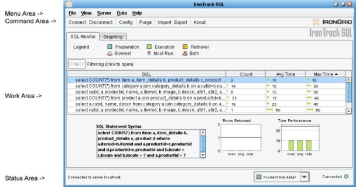

After you have installed and configured IronTrack SQL, you can begin using the graphical user interface to manage the performance of the SQL statements in your development environment. This document is intended to give you a general understanding of the basic features of the IronTrack SQL user interface.
From this document, you can access the following information:
If the IronTrack SQL client is not currently running, you can start it now by double-clicking on the IronTrack SQL shortcut to display the IronTrack SQL user interface.

IronTrack SQL starts and attempts to connect to your server. You can launch IronTrack SQL, while the server is not running, but you cannot load data into the application until you start the server.
The IronTrack SQL user interface displays the following areas:
The menu area includes all of the operations that can be performed in the IronTrack SQL user interface. Which menu options appear is determined by whether you are using IronEye™ SQL or IronTrack SQL™.
The command area of the IronTrack SQL user interface includes the following command buttons:
If you are using IronTrack SQL, you will see two tabs in the work area representing the following work areas:
You can double-click on an SQL statement in either tab to take you to the location of same statement in the other tab.
If you are using IronEye SQL, you will see only the Monitoring section.
From the work area, you can view the performance of your SQL statements, make adjustments to them, and compare the differences between datasets.
The status area displays the status of the last operation performed in the lower left-hand corner of the interface. The status area displays the current connection status in the lower right-hand corner of the interface. The drop-down menu in the status area provides a way for you to select among the available datasets to show in the interface. (Default is current live data.) If you have imported multiple datasets, use the down arrow to select which among datasets to display in the work area.
If you have started the application server with which IronTrack SQL is configured, the IronTrack SQL user interface automatically connects, when it starts up.
If you have not yet started the application server, to connect IronTrack SQL
The status area in the lower left-hand corner of the user interface indicates that you are connected to the server.
To disconnect from your server, click Disconnect in the command area.
The connection status displays in the status bar.
IronTrack SQL enables you to easily export datasets that you have collected to an HTML, a CSV, or an XML file. Exporting datasets enables you to take a snapshot of a particular session of data, or allows you to view data in your browser or in spreadsheet form.
To export the current data displayed in the IronTrack SQL user interface

The details of the export operation display in the status bar at the base of the IronTrack SQL interface.
Note: The export operation ignores any filtering you have performed and save the entire dataset.
After you have exported datasets to individual files, you can import them into the user interface and view their contents.
To import an existing dataset from a file
Note: You can select the dataset to view by using the down arrow in the status area.
You can periodically purge data from IronTrack SQL. For example, you may want to clear out all of the SQL statements on both the interface and server, so you can begin evaluating another set of SQL statements. You could first purge existing data, then trigger your application to generate some database activity. Purging data deletes the contents of the spy.log file. Triggering SQL statement begins adding data back to the spy.log file.
To purge data from the client and server, complete the following steps:
The status of the purge operation displays in the status bar in the lower left-hand corner of the user interface.
After you have become familiar with the IronTrack SQL user interface, you can begin testing application performance on an incremental basis.
To begin testing the performance of your SQL statements
Results of the queries will begin to appear in the IronTrack SQL user interface. At this point, you can begin monitoring and managing your queries with IronTrack SQL.